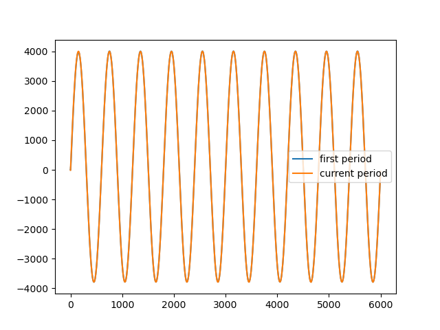

Simple Example
In the first example we connect to a single RedPitaya and generate a sinus signal of frequency 10 kHz on DAC channel 1 and receive the same signal on the ADC channel 1. To run this example connect the RedPitaya in the following way.

Note that while the example only plots the first channel of the RedPitaya, both channels are transmitted to the clients.
Julia Client
This and all other examples are located in the examples directory.
using RedPitayaDAQServer
using PyPlot
# obtain the URL of the RedPitaya
include("config.jl")
# Establish connection to the RedPitaya
rp = RedPitaya(URLs[1])
# Set server in CONFIGURATION mode, s.t. we can prepare our signal generation + acquisition
serverMode!(rp, CONFIGURATION) # or serverMode!(rp, "CONFIGURATION")
dec = 32
modulus = 12480
base_frequency = 125000000
samples_per_period = div(modulus, dec)
periods_per_frame = 2
# ADC Configuration
# These commands are only allowed in CONFIGURATION mode
decimation!(rp, dec)
samplesPerPeriod!(rp, samples_per_period)
periodsPerFrame!(rp, periods_per_frame)
triggerMode!(rp, INTERNAL) # or triggerMode!(rp, "INTERNAL")
# DAC Configuration
# These commands are allowed during an acquisition
frequencyDAC!(rp, 1, 1, base_frequency / modulus)
signalTypeDAC!(rp, 1 , 1, SINE) # or signalTypeDAC!(rp, 1, "SINE")
amplitudeDAC!(rp, 1, 1, 0.5)
offsetDAC!(rp, 1, 0)
phaseDAC!(rp, 1, 1, 0.0)
# Start signal generation + acquisition
# The trigger can only be set in ACQUISITION mode
serverMode!(rp, ACQUISITION)
masterTrigger!(rp, true)
# Transmit the first frame
uFirstPeriod = readFrames(rp, 0, 1)
sleep(0.1)
# Transmit the current frame
fr = currentFrame(rp)
# Dimensions of frames are [samples channel, period, frame]
uCurrentPeriod = readFrames(rp, fr, 1)
sleep(0.2)
uLastPeriod = readFrames(rp, currentFrame(rp), 1)
# Stop signal generation + acquisition
masterTrigger!(rp, false)
serverMode!(rp, CONFIGURATION)
figure(1)
clf()
# Frame dimensions are [samples, chan, periods, frames]
plot(vec(uFirstPeriod[:,1,:,:]))
plot(vec(uCurrentPeriod[:,1,:,:]))
plot(vec(uLastPeriod[:,1,:,:]))
legend(("first period", "current period", "last period"))
savefig("images/simple.png")
Python Client
This example is located in the python examples directory. The python examples use a very reduced Python client class that is located here. The Python client only wraps the low-level socket communication.
from RedPitayaDAQServer import *
import matplotlib.pyplot as plt
print("Simple Python Example")
host = "192.168.178.52"
rp = RedPitaya(host)
# Set server in CONFIGURATION mode, s.t. we can prepare our signal generation + acquisition
ret = rp.query("RP:MODe CONFIGURATION")
dec = 32
modulus = 12480
base_frequency = 125000000
samples_per_period = int((modulus / dec))
periods_per_frame = 2
samples_per_frame = samples_per_period * periods_per_frame
# ADC Configuration
# These commands are only allowed in CONFIGURATION mode
ret = rp.query("RP:ADC:DECimation %d" % dec)
ret = rp.query("RP:TRIGger:MODe %s" % "INTERNAL")
# DAC Configuration
# These commands are allowed during an acquisition
ret = rp.query("RP:DAC:CH0:COMP0:FREQ %f" % (base_frequency / modulus))
ret = rp.query("RP:DAC:CH0:COMP0:SIGnaltype SINE")
ret = rp.query("RP:DAC:CH0:COMP0:AMP %f" % (0.5))
ret = rp.query("RP:DAC:CH0:OFF %f" % (0.0))
ret = rp.query("RP:DAC:CH0:COMP0:PHA %f" % (0.0))
# Start signal generation + acquisition
# The trigger can only be set in ACQUISITION mode
ret = rp.query("RP:MODe ACQUISITION")
ret = rp.query("RP:TRIGger ON")
# Transmit the first frame
uFirstPeriod = rp.readSamples(0, samples_per_frame)
time.sleep(0.1)
# Transmit a current frame
fr = int( int(rp.query("RP:ADC:WP?")) / samples_per_frame ) * samples_per_frame
# Dimensions of frames are [samples channel, period, frame]
uCurrentPeriod = rp.readSamples(fr, samples_per_frame)
time.sleep(0.1)
fr = int( int(rp.query("RP:ADC:WP?")) / samples_per_frame ) * samples_per_frame
uLastPeriod = rp.readSamples(fr, samples_per_frame)
# Stop signal generation + acquisition
ret = rp.query("RP:TRIGger OFF")
ret = rp.query("RP:MODe CONFIGURATION")
plt.figure(1)
plt.clf()
plt.plot(uFirstPeriod[0,:])
plt.plot(uCurrentPeriod[0,:])
plt.plot(uLastPeriod[0,:])
plt.legend(("first period", "current period", "last period"))
plt.savefig("simple.png")
plt.show()